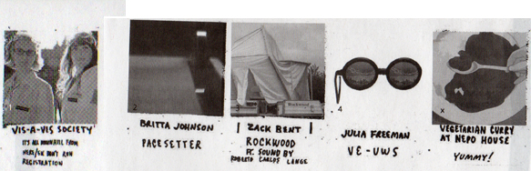
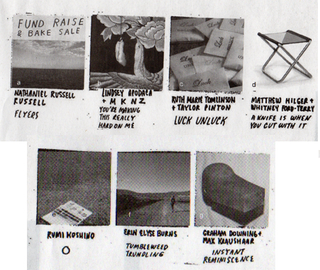
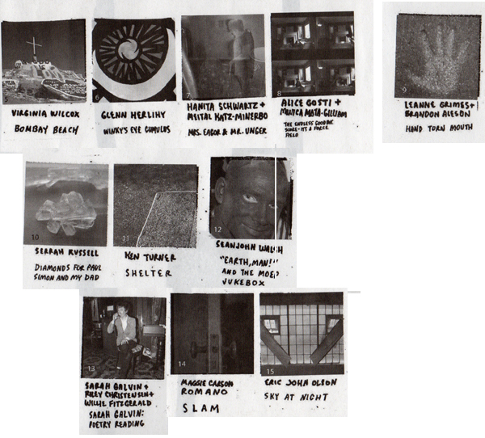
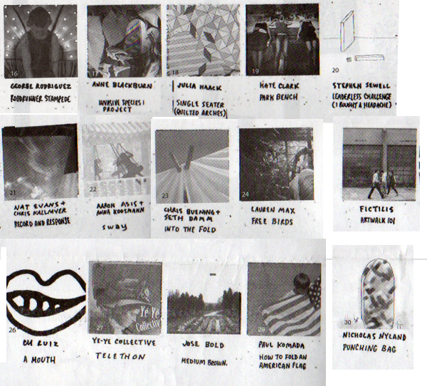
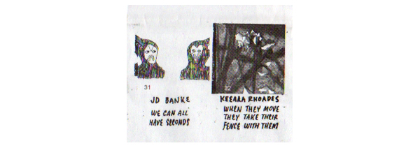
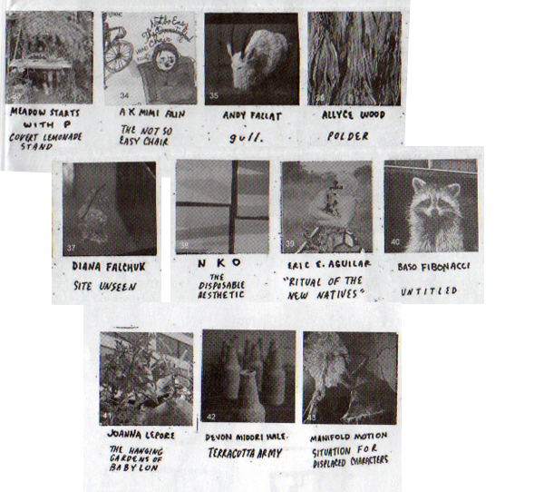
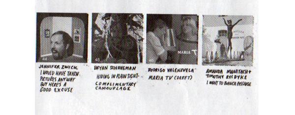
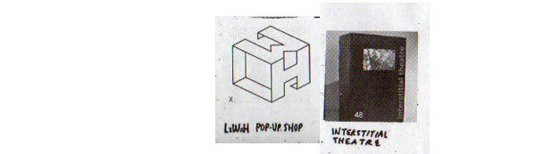
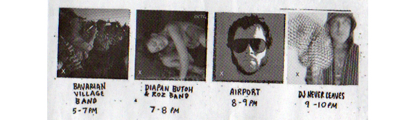

NEPO 5K DON'T RUN 2012: ARTISTS
Nathaniel Russell // Lindsey Apodaca + MKNZ // Ruth Marie Tomlinson + Taylor Pinton // Matthew Hilger + Whitney Ford-Terry // Rumi Koshino // Erin Elyse Burns // Graham Downing + Max Kraushaar // Vis-a-Vis Society // Britta Johnson // Zack Bent + Roberto Carlos Lange // Julia Freeman // Virginia Wilcox // Glenn Herlihy // Hanita Schwartz + Meital Katz-Minerbo // Alice Gosti + Monica Mata Gilliam // Leanne Grimes + Brandon Aleson // Serrah Russell // Ken Turner // Seanjohn Walsh // Sarah Galvin + Riley Christensen + Willie Fitzgerald // Maggie Carson Romano // Eric John Olson // George Rodriguez // Anne Blackburn // Julia Haack // Kate Clark // Stephen Sewell // Nat Evans + Chris Kallmyer // Aaron Asis + Anna Koosmann // Chris Buening + Seth Damm // Lauren Max // Fictilis // C.M. Ruiz // Ye-Ye Collective // Jose Bold // Paul Komada // Nicholas Nyland // JD Banke // Keeara Rhoades // Andrew Peterson + meadow starts with p // A K Mimi Alin // Andy Fallat // Allyce Wood // Diana Falchuk // NKO // Eric E. Aguilar // Baso Fibonacci // Joanna Lepore // Devon Midori Hale // Manifold Motion // Jennifer Zwick // Rodrigo Valenzuela // Amanda Manitach + Timothy Rysdyke // Interstitial Theatre
At NEPO House:
It's All Downhill From Here/registration by Vis-a-Vis Society

Projects spanning the whole route:

Along 18th Avenue South:

Projects along the I-90 bike trail and in Daejeon Park:

Under the Jose Rizal Bridge:

On King Street:

At finish line in front of Kobe Park:


Plus music and performances MCed by Jake Stratton:

ARTISTS // CURATORS // LOCATION and SCHEDULE // PRESS and SPONSORS